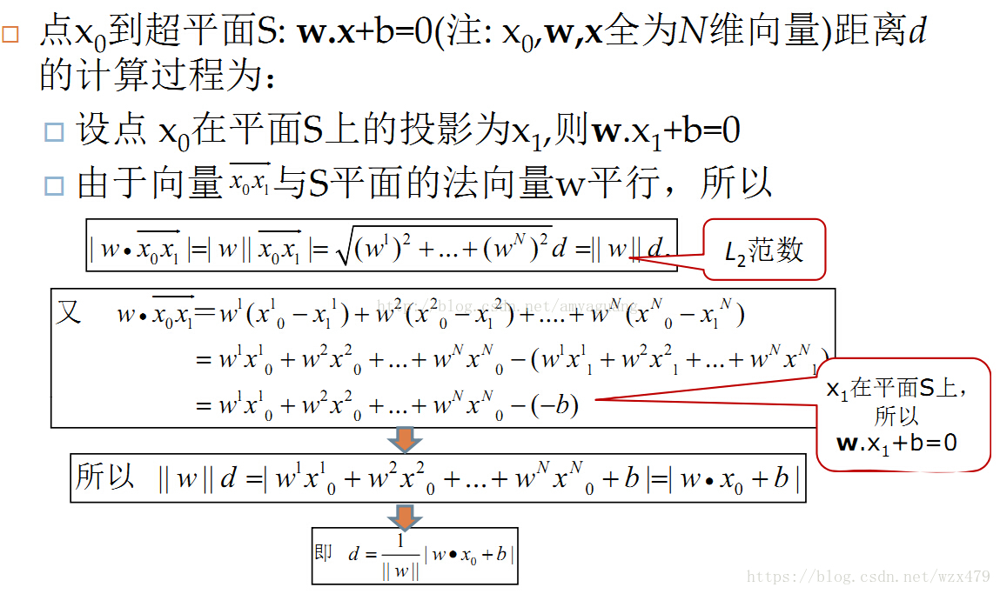
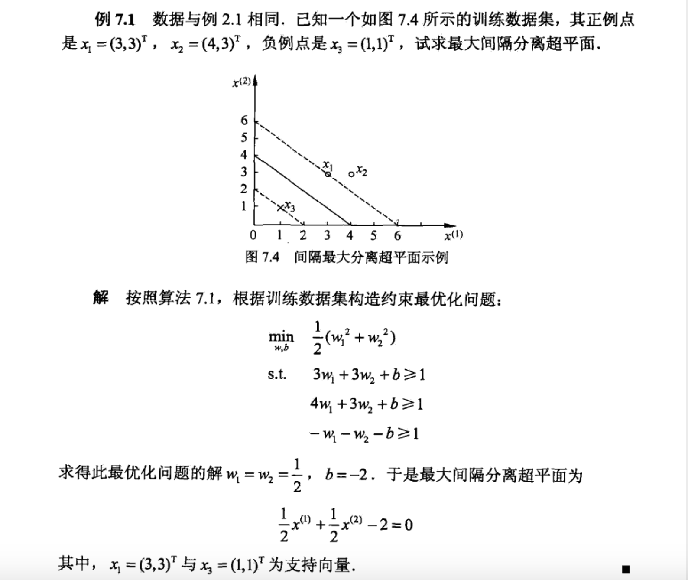
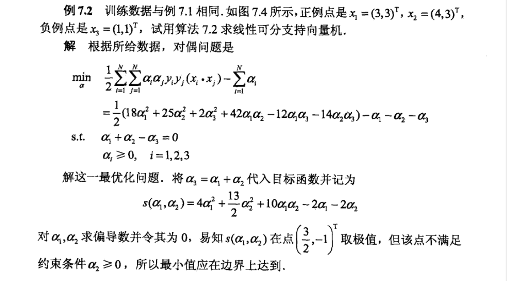
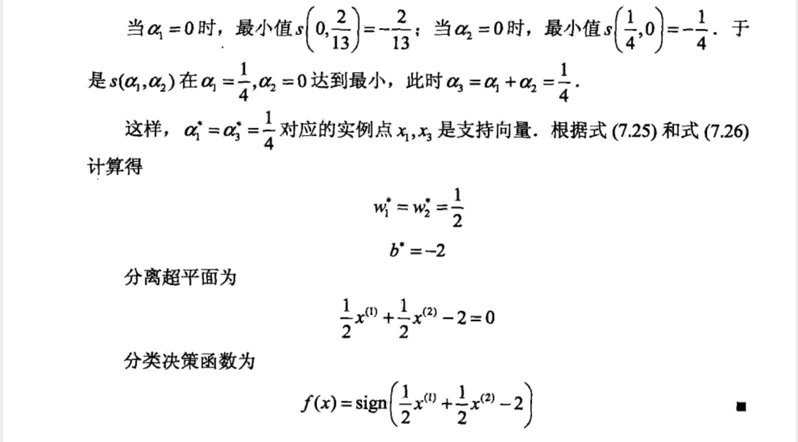
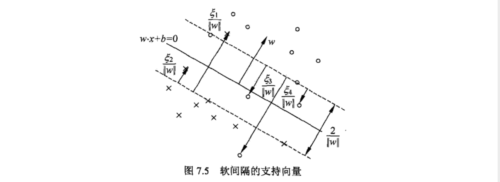
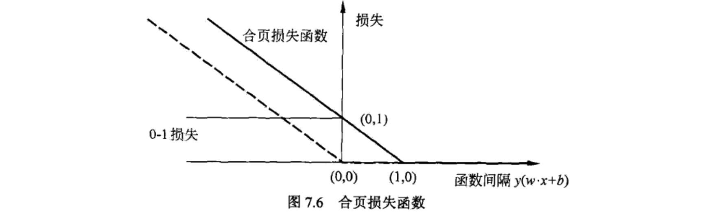
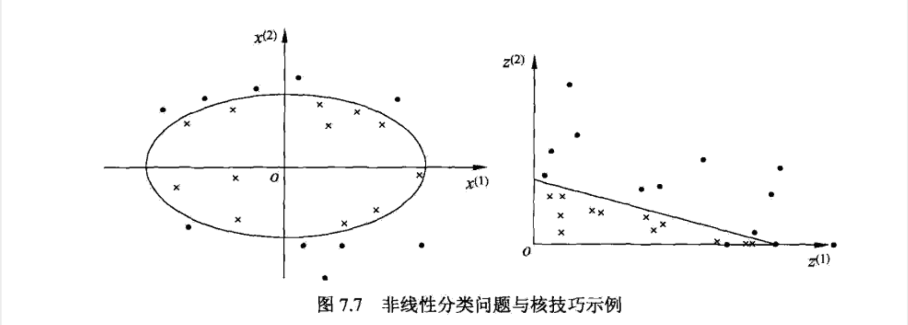
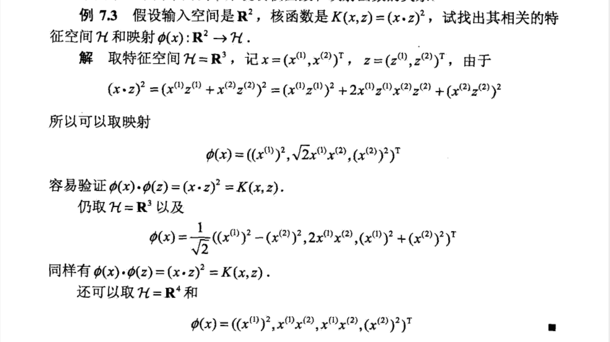

更多内容可参考【reference】-【支持向量机.mp4】。
支持向量机（SVM）是一种二类分类模型。它的基本模型是定义在特征空间上的间隔最大的线性分类器，间隔最大使它有别于感知机；支持向量机还包括核技巧，这使它成为实质上的非线性分类器。支持向量机的学习策略就是间隔最大化，可形式化为一个求解凸二次规划的问题，也等价于正则化的合页损失函数的最小化问题。支持向量机的学习算法是求解凸二次规划的最优化算法。
支持向量机学习方法包含构建由简至繁的模型：线性可分支持向量机、线性支持向量机及非线性支持向量机。 简单模型是复杂模型的基础，也是复杂模型的特殊情况。当训练数据线性可分时，通过硬间隔最大化，学习一个线性的分类器，即线性可分支持向量机，又称为硬间隔支持向量机；当训练数据近似线性可分时，通过软间隔最大化，也学习一个线性的分类器，即线性支持向量机，又称为软间隔支持向量机；当训练数据线性不可分时，通过使用核技巧及软间隔最大化，学习非线性支持向量机。
当输入空间为欧氏空间或离散集合、特征空间为希尔伯特空间时，核函数表示将输入从输入空间映射到特征空间得到的特征向量之间的内积。通过使用核函数可以学习非线性支持向量机，等价于隐式地在高维的特征空间中学习线性支持向量机。这样的方法称为核技巧。核方法是比支持向量机更为一般的机器学习方法。
- 输入空间：输入所有可能取值的集合。
- 输出空间：输出所有可能取值的集合。
- 特征空间：特征空间是所有特征向量存在的空间。特征空间的每一维对应于一个特征。
有时假设输入空间与特征空间为相同的空间，对它们不予区分；有时假设输入空间与特征空间为不同的空间，将实例从输入空间映射到特征空间。模型实际上都是定义在特征空间上的。
考虑一个二分类问题。假设输入空间与特征空间为两个不同的空间。输入空间为欧氏空间或离散集合，特征空间为欧氏空间或希尔伯特空间。线性可分支持向量机、线性支持向量机假设两个空间的元素一一对应，并将输入空间中的输入映射为特征空间中的特征向量。非线性支持向量机利用一个从输入空间到特征空间的非线性映射将输入映射为特征向量。所以，输入都由输入空间转换为特征空间，支持向量机的学习是在特征空间进行的。
训练数据集：
T={(x1,y1),(x2,y2),⋯,(xN,yN)}
其中，xi∈X=Rn,yi∈Y={+1,−1},i=1,2,⋯,N，xi为第i个特征向量（实例），yi为第xi的类标记，当yi=+1时，称xi为正例；当yi=−1时，称xi为负例，(xi,yi)称为样本点。再假设训练熟练数据集是线性可分的。
学习的目标是在特征空间中找到一个分离超平面，能将实例分到不同的类。分离超平面对应于方程 w∗x+b=0，它是由法向量 w 和截距 b 决定，可用 (w,b) 来表示。分离超平面将特征空间划分为两部分，一部分是正类，一部分是负类。法向量指向的一侧为正类，另一侧为负类。
一般地，当训练数据集线性可分时，存在无穷个分离超平面可将两类数据正确分开。感知机利用误差分类最小的策略，求得分离超平面，不过这时的解有无穷多个。线性可分支持向量机利用间隔最大化求最优分离超平面，这时，解是唯一的。
线性可分支持向量机（硬间隔支持向量机）：给定线性可分训练数据集，通过间隔最大化或等价地求解相应地凸二次规划问题学习得到分离超平面为：
w∗⋅x+b∗=0
以及相应的分类决策函数：
f(x)=sign(w∗⋅x+b∗)
称为线型可分支持向量机。
考虑如图 7.1 所示的二维特征空间中的分类问题。图中“∘”表示正例，“×”表示负例。训练数据集线性可分，这时有许多直线能将两类数据正确划分。线性可分支持向量机对应着将两类数据正确划分并且间隔最大的直线。
在图 7.1 中，有A，B，C三个点，表示 3 个实例，均在分离超平面的正类一侧，预测它们的类。点 A 距分离超平面较远，若预测该点为正类，就比较确信预测是正确的；点 C 距分离超平面较近，若预测该点为正类就不那么确信；点 B 介于点 A 与 C 之间，预测其为正类的确信度也在 A 与 C 之间。
一般来说，一个点距离分离超平面的远近可以表示分类预测的确信程度（越远越确信）。在超平面 w⋅x+b=0 确定的情况下，∣w⋅x+b∣ 能够相对地表示点 x 距离超平面的远近。而 w⋅x+b 的符号与类标记𝑦的符号是否一致能够表示分类是否正确。所以可用 y(w⋅x+b) 来表示分类的正确性及确信度，这就是函数间隔。
超平面(w,b)关于样本点(xi,yi)的函数间隔为：
γ^i=yi(w⋅xi+b)
超平面(w,b)关于训练集T的函数间隔：
γ^=i=1,2,⋯,Nminγ^i
即超平面(w,b)关于训练集T中所有样本点(xi,yi)的函数间隔的最小值。
函数间隔可以表示分类预测的正确性及确信度。但是选择分离超平面时，只有函数间隔还不够。因为只要成比例改变 w 和 b，例如将它们改为 2w 和 2b，超平面并没有改变，但函数间隔却成为原来的 2 倍。这一事实启示我们，可以对分离超平面的法向量 w 加某些约束，如规范化，∣∣w∣∣=1，使间隔是确定的（w 和 b 成比例改变时，几何间隔不变），这时函数间隔变成几何间隔。
图 7.2 给出了超平面 (w,b) 及其法向量 w。点 A 表示某一实例 xi，其类标记为 yi=+1。点 A 与超平面 (w,b) 的距离由线段 AB 给出，记作 γi。
γi=∥w∥w⋅xi+∥w∥b
其中， ∣∣w∣∣ 为 w 的 L2 范数。如果点 A 在超平面负的一侧，即 yi=−1，那么点与超平面的距离为：
γi=−(∥w∥w⋅xi+∥w∥b)
一般地，当样本点 (xi,yi) 被超平面 (w,b) 正确分类时，点 xi 与超平面 (w,b) 的距离是：
γi=yi(∥w∥w⋅xi+∥w∥b)
超平面(w,b)关于样本点(xi,yi)的几何间隔为：
γi=yi(∥w∥w⋅xi+∥w∥b)
超平面(w,b)关于训练集T的几何间隔：
γ=i=1,2,⋯,Nminγi
即超平面(w,b)关于训练集T中所有样本点(xi,yi)的几何间隔的最小值。
函数间隔和几何间隔的关系：
γi=∥w∥γ^iγ=∥w∥γ^
如果 ∣∣w∣∣=1，那么函数间隔和几何间隔相等。如果超平面参数 w 和 b 成比例地改变（超平面没有改变），函数间隔也按此比例改变，而几何间隔不变。
支持向量机学习的基本想法是求解能够正确划分训练数据集并且几何间隔最大的分离超平面。对线性可分的训练数据集而言，线性可分分离超平面有无穷多个（等价于感知机），但是几何间隔最大的分离平面是唯一的。这里的间隔最大化又称为硬间隔最大化。
间隔最大化的直观解释是：对训练数据集找到几何间隔最大的超平面意味着以充大的确信度对训练数据进行分类。也就是说，不仅将正负实例点分开，而且对最难分的实例点（离超平面最近的点）也有足够大的确信度将它们分开。这样的超平面应该对未知的新实例有很好的分类预测能力。
1. 最大间隔分离超平面
求解最大间隔分离超平面的问题可以表示为下面的约束最优化问题：
w,bmaxγs.t.yi(∥w∥w⋅xi+∥w∥b)≥γ,i=1,2,⋯,N
即我们希望最大化超平面 (w,b) 关于训练数据集的几何间隔 γ，约束条件表示的是超平面 (w,b) 关于每个训练样本点的几何间隔至少是 γ。
考虑几何间隔和函数间隔的关系式，可将问题改写成：
w,bmax∥w∥γ^s.t.yi(w⋅xi+b)≥γ^,i=1,2,⋯,N
函数间隔 γ^ 的取值并不影响最优化问题的解。事实上，假设将 w 和 b 按比例改变为 λω 和 λb，这时函数间隔称为 λγ^ ，函数间隔的这一改变对上面最优化问题的不等式约束没有影响，对目标函数的优化也没有影响。这样，就可以取 γ^=1。
注意到最大化 ∣∣w∣∣1 和最小化 21∣∣w∣∣2 是等价的，于是得到下面的最优化问题：
w,bmin21∥w∥2s.t.yi(w⋅xi+b)−1≥0,i=1,2,⋯,N
这是一个凸二次规划问题。
凸优化问题是指约束最优化问题：
minw s.t. f(w)gi(w)⩽0,i=1,2,⋯,khi(w)=0,i=1,2,⋯,l
其中，目标函数 f(w) 和约束函数 gi(w) 都是 Rn 上的连续可微的凸函数，约束函数 hi(w) 是 Rn 上的仿射函数。
仿射函数：f(x) 称为仿射函数，如果它满足：f(x)=a⋅x+b,a∈Rn,b∈R,x∈Rn。
当目标函数 f(w) 是二次函数且约束函数 gi(w) 是仿射函数时，上述凸优化问题称为凸二次规划问题。
如果求出了上述最优化问题的解 w∗ 和 b∗，那么就可以得到最大间隔分离超平面 w∗x+b∗=0 及分类决策函数 f(x)=sign(w∗x+b∗)，即线性可分支持向量机模型。
综上，就有线性可分支持向量机的学习算法——最大间隔法。
线性可分支持向量机学习算法（最大间隔法）：
输入：线性可分训练数据集T={(x1,y1),(x2,y2),⋯,(xN,yN)}，其中xi∈X=Rn,yi∈Y={+1,−1},i=1,2,⋯,N
输出：最大间隔分离超平面和分类决策函数
- 构建并求解约束最优化问题
w,bmin21∥w∥2s.t.yi(w⋅xi+b)−1≥0,i=1,2,⋯,N
求得最优解w∗,b∗。
- 得到分离超平面
w∗⋅x+b∗=0
以及分类决策函数：
f(x)=sign(w∗⋅x+b∗)
2. 最大间隔分离超平面的存在唯一性
线性可分训练数据集的最大间隔分离超平面是存在且唯一的。
相关证明详见书籍。
3. 支持向量和间隔边界
在线性可分情况下，训练数据集的样本点中与分离超平面距离最近的样本点的实例称为支持向量。支持向量是使约束条件等号成立的点，即：
（self： 因为约束条件是不等式，具体来说就是，对于所有的负例点，这条直线必须要位于它的上方；对于所有的正例点，这条直线必须位于它的下方；所以当这条直线就是边界上的样例点所在的直线时，正好取到等号，就是这条直线刚刚满足上述的那些要求。接下来要做的就是最大化，在满足这两条直线的中间沿着最大化的方向选择最大的那条直线。）
yi(w⋅xi+b)−1=0
对yi=+1的正例点，支持向量在超平面：
H1:w⋅x+b=1
对yi=−1的正例点，支持向量在超平面：
H1:w⋅x+b=−1
H1和H2称为间隔边界。如图 7.3 所示。
注意到 H1 和 H2 平行，并且没有实例点落在它们中间。在 H1 与 H2 之间形成一条长带，分离超平面与它们平行且位于它们中央。长带的宽度，即 H1 与 H2 之间的距离称为间隔。间隔依赖于分离超平面的法向量，等于 ∣H1H2∣=∥w∥1+∥w∥1=∥w∥2。H1 和 H2 称为间隔边界。
任意点到超平面的距离公式：
在样本空间中，划分超平面可通过如下线性方程来描述:
wTx+b=0
其中 w 决定了超平面的方向; b 为位移项，决定了超平面与原点之间的距离。显然，划分超平面可被法向量 w 和位移 b 确定。
任意点到超平面的距离公式为：
∥w∥1∣w∙x0+b∣
推到如下：

对应到上面的间隔距离，因为支持向量（边界的样例点）满足 yi(w⋅xi+b)=1，所以支持向量到超平面的间隔就是 ∣∣w∣∣1。
在决定分离超平面时只有支持向量起作用，而其他实例点并不起作用。如果移动支持向量将改变所求的解；但是如果在间隔边界以外移动其他实例点，甚至去掉这些点，则解是不会改变的。由于支持向量在确定分离超平面中起着决定性作用，所以将这种分类模型称为支持向量机。支持向量的个数一般很少，所以支持向量机由很少的“重要的”训练样本确定。
例子：

由以上内容可知，线性可分支持向量机的最优化问题如下：
w,bmin21∥w∥2s.t.yi(w⋅xi+b)−1≥0,i=1,2,⋯,N(1)
为了求解该最优化问题，将它作为原始最优化问题，应用拉格朗日对偶性，通过求解对偶问题得到原始问题的最优解，这就是线性可分支持向量机的对偶算法。这样做的优点，一是对偶问题往往更容易求解；而是自然引入核函数，进而推广到非线性分类问题。
- 首先构建拉格朗日函数。为此，对上述每个不等式约束引进拉格朗日乘子 αi≥0,i=1,2,...,N，定义拉格朗日函数：
L(w,b,α)=21∥w∥2+i=1∑Nαi[−yi(w⋅xi+b)+1]=21∥w∥2−i=1∑Nαiyi(w⋅xi+b)+i=1∑Nαi
其中，α=(α1,α2,⋯,αN)T为拉格朗日乘子向量。
根据拉格朗日对偶性，原始问题的对偶问题是极大极小问题：
αmaxw,bminL(w,b,α)
所以，为了得到对偶问题的解，需要先求 L(w,b,α) 对 w，b 的极小，再求对 α 的极大。
将拉格朗日函数 L(w,b,α) 分别对 w，b 求偏导并令其等于 0。
- 求minw,bL(w,b,α):
∇wL(w,b,α)=w−i=1∑Nαiyixi=0∇bL(w,b,α)=−i=1∑Nαiyi=0
得
w＝i=1∑Nαiyixii=1∑Nαiyi=0
代入拉格朗日函数，得
L(w,b,α)=21i=1∑Nj=1∑Nαiαjyiyj(xi⋅xj)−i=1∑Nαiyi[(j=1∑Nαjyjxj)⋅xi+b]+i=1∑Nαi=−21i=1∑Nj=1∑Nαiαjyiyj(xi⋅xj)−i=1∑Nαiyib+i=1∑Nαi=−21i=1∑Nj=1∑Nαiαjyiyj(xi⋅xj)+i=1∑Nαi
即
w,bminL(w,b,α)=−21i=1∑Nj=1∑Nαiαjyiyj(xi⋅xj)+i=1∑Nαi
- 求maxαminw,bL(w,b,α):
αmax−21i=1∑Nj=1∑Nαiαjyiyj(xi⋅xj)+i=1∑Nαis.t.i=1∑Nαiyi=0αi≥0,i=1,2,⋯,N
等价的
αmin21i=1∑Nj=1∑Nαiαjyiyj(xi⋅xj)−i=1∑Nαis.t.i=1∑Nαiyi=0αi≥0,i=1,2,⋯,N(2)
考虑原始最优问题式(1)和对偶问题式(2)，原始问题满足定理 C.2 的条件（C.2详见书籍的附录 C），所以存在 w∗，α∗，β∗，使 w∗ 是原始问题的解，α∗，β∗ 是对偶问题的解。这意味着求解原始问题式(1)可以转换为求解对偶问题式(2)。
对线性可分训练数据集，假设对偶最优化问题式(2)对 α 的解为 α∗=(α1∗,α2∗,⋯,αN∗)T，可以由 α∗ 求得原始最优化问题式(1)对 (w,b) 的解 w∗，b∗。有以下的定理。
定理： 设 α∗=(α1∗,α2∗,⋯,αN∗)T 是对偶最优化问题式(2)的解，则存在下标 j，使得 αj∗>0，并可按下式求得最原始问题式(1)的解。（该定理的证明详见书籍）
w∗=∑i=1Nαi∗yixib∗=yj−∑i=1Nαi∗yi(xi⋅xj)(3)
由此定理可知，分离超平面可以写成：
i=1∑Nαi∗yi(x⋅xi)+b∗=0
分类决策函数可以写成：
f(x)=sign(i=1∑Nαi∗yi(x⋅xi)+b∗)
这就是说，分类决策函数只依赖于输入 x 和训练样本输入的内积。上式称为线性可分支持向量机的对偶形式。
综上所述，对于给定的线性可分训练数据集，可以首先求对偶问题的解 α∗；再利用式(3)求得原始问题的解 w∗，b∗；从而得到分离超平面及分类决策函数。这种算法称为线性可分支持向量机的对偶学习算法，是线性可分支持向量机学习的基本算法。
线性可分支持向量机（硬间隔支持向量机）学习算法：
输入：线性可分训练数据集T={(x1,y1),(x2,y2),⋯,(xN,yN)}，其中xi∈X=Rn,yi∈Y={+1,−1},i=1,2,⋯,N
输出：最大间隔分离超平面和分类决策函数
- 构建并求解约束最优化问题
αmin21i=1∑Nj=1∑Nαiαjyiyj(xi⋅xj)−i=1∑Nαis.t.i=1∑Nαiyi=0αi≥0,i=1,2,⋯,N
求得最优解α∗=(α1∗,α1∗,⋯,αN∗)。
- 计算
w∗=i=1∑Nαi∗yixi
并选择α∗的一个正分量αj∗>0，计算
b∗=yj−i=1∑Nαi∗yi(xi⋅xj)
- 得到分离超平面
w∗⋅x+b∗=0
以及分类决策函数
f(x)=sign(w∗⋅x+b∗)
在线性可分支持向量机中，由式(3)可知，w∗ 和 b∗ 只依赖于训练数据中对应于 α∗>0 的样本点 (xi,yi)，而其它样本点对 w∗ 和 b∗没有影响。我们将训练数据中对应于 α∗>0 的实例点 xi∈Rn 称为支持向量。
支持向量一定在间隔边界上。（相关证明详见书籍）
例子：


对于线性可分问题，上述线性可分支持向量机的学习（硬间痛最大化〉算法是完美的。但是，训练数据集线性可分是理想的情形。在现实问题中，训练数据集往往是线性不可分的，即在样本中出现噪声或特异点。此时，有更一般的学习算法。
线性可分SVM的学习方法对线性不可分数据是不适用的，因为上述方法中的不等式约束并不能都成立。为了将其扩展到线性不可分问题，需要修改硬间隔最大化，使其称为软间隔最大化。
通常情况是，训练数据中有一些特异点（outlier）。将这些特异点除去后，剩下大部分的样本点组成的集合是线性可分的。
线性不可分意味着某些样本点 (xi,yi) 不能满足函数间隔大于等于 1 的约束条件式。为了解决这个问题，可以对每个样本点 (xi,yi) 引进一个松弛变量 ξi≥0，使函数间隔加上松弛变量大于等于 1。这样，约束条件变为：
yi(w⋅xi+b)⩾1−ξi
同时，对每个松弛变量 ξi，支付一个代价 ξi。目标函数由原来的 21∣∣w∣∣2 变为：
21∥w∥2+Ci=1∑Nξi(4)
这里，C>0 称为惩罚系数，一般由应用问题决定，C 值大时对误分类的惩罚增大，C 值小时对误分类的惩罚减小。最小化目标函数式(4)包含两层含义：使 21∣∣w∣∣2 尽量小即间隔尽量大，同时使误差分类点的个数尽量小，C 是调和二者的系数。
有了上面的思路，可以和训练数据集线性可分时一样来考虑训练数据集线性不可分时的线性支持向量机学习的问题。相应于硬间隔最大化，它称为软间隔最大化。
线性不可分的线性支持向量机的学习问题变为如下凸二次规划问题（原始问题）：
w,b,ξmin21∥w∥2+Ci=1∑Nξis.t.yi(w⋅xi+b)≥1−ξiξi≥0,i=1,2,⋯,N(5)
上式原始问题时一个凸二次规划问题，因而关于 (w,b,ξ) 的解时存在的。可以证明 w 的解是唯一的，但 b 的解不唯一，b 的解存在于一个区间。
求解上式(5)所得到的模型为训练样本不可分时的线性支持向量机，简称为线性支持向量机。显然，线性支持向量机包含线性可分支持向量机。由于现实中训练数据集往往是线性不可分的，线性支持向量机具有更广的适用性。
线性支持向量机（软间隔支持向量机）： 给定线性不可分训练数据集，通过求解凸二次规划问题
w,b,ξmin21∥w∥2+Ci=1∑Nξis.t.yi(w⋅xi+b)≥1−ξiξi≥0,i=1,2,⋯,N
学习得到分离超平面为
w∗⋅x+b∗=0
以及相应的分类决策函数
f(x)=sign(w∗⋅x+b∗)
称为线型支持向量机。
原始问题为：
w,b,ξmin21∥w∥2+Ci=1∑Nξis.t.yi(w⋅xi+b)≥1−ξiξi≥0,i=1,2,⋯,N(6)
- 引入拉格朗日乘子αi≥0,μi≥0,i=1,2,⋯,N构建拉格朗日函数
L(w,b,ξ,α,μ)=21∥w∥2+Ci=1∑Nξi+i=1∑Nαi[−yi(w⋅xi+b)+1−ξi]+i=1∑Nμi(−ξi)=21∥w∥2+Ci=1∑Nξi−i=1∑Nαi[yi(w⋅xi+b)−1+ξi]−i=1∑Nμiξi
其中，α=(α1,α2,⋯,αN)T以及μ=(μ1,μ2,⋯,μN)T为拉格朗日乘子向量。
- 求minw,b,ξL(w,b,ξ,α,μ):
∇wL(w,b,ξ,α,μ)=w−i=1∑Nαiyixi=0∇bL(w,b,ξ,α,μ)=−i=1∑Nαiyi=0∇ξiL(w,b,ξ,α,μ)=C−αi−μi=0
得
w＝i=1∑Nαiyixii=1∑Nαiyi=0C−αi−μi=0
代入拉格朗日函数，得
L(w,b,ξ,α,μ)=21i=1∑Nj=1∑Nαiαjyiyj(xi⋅xj)+Ci=1∑Nξi−i=1∑Nαiyi[(j=1∑Nαjyjxj)⋅xi+b]+i=1∑Nαi−i=1∑Nαiξi−i∑Nμiξi=−21i=1∑Nj=1∑Nαiαjyiyj(xi⋅xj)−i=1∑Nαiyib+i=1∑Nαi+i=1∑Nξi(C−αi−μi)=−21i=1∑Nj=1∑Nαiαjyiyj(xi⋅xj)+i=1∑Nαi
即
w,b,ξminL(w,b,ξ,α,μ)=−21i=1∑Nj=1∑Nαiαjyiyj(xi⋅xj)+i=1∑Nαi
- 求maxαminw,b,ξL(w,b,ξ,α,μ):（对偶问题）
αmax−21i=1∑Nj=1∑Nαiαjyiyj(xi⋅xj)+i=1∑Nαis.t.i=1∑Nαiyi=0C−αi−μi=0αi≥0μi≥0,i=1,2,⋯,N
等价的 （原始问题的对偶问题就是下式）
αmin21i=1∑Nj=1∑Nαiαjyiyj(xi⋅xj)−i=1∑Nαis.t.i=1∑Nαiyi=00≤αi≤C,i=1,2,⋯,N(7)
可以通过求解对偶问题而得到原始问题的解，进而确定分离超平面和决策函数。为此，就可以定理的形式叙述原始问题的最优解和对偶问题的最优解的关系。
定理： 设 α∗=(α1∗,α2∗,⋯,αN∗)T 是对偶问题式(7)的一个解，若存在 α∗ 的一个分量 αj∗，0<αj∗<C，则原始问题式(6)的解 w∗,b∗ 可按下式求解：（该定理的证明详见书籍）
w∗=∑i=1Nαi∗yixib∗=yj−∑i=1Nyiαi∗(xi⋅xj)(7)
由此定理可知，分离超平面可写成：
i=1∑Nαi∗yi(x⋅xi)+b∗=0
分类决策函数可以写成：
f(x)=sign(i=1∑Nαi∗yi(x⋅xi)+b∗)
上式为线性支持向量机的对偶形式。
线性支持向量机（软间隔支持向量机）学习算法：
输入：训练数据集T={(x1,y1),(x2,y2),⋯,(xN,yN)}，其中xi∈X=Rn,yi∈Y={+1,−1},i=1,2,⋯,N
输出：最大间隔分离超平面和分类决策函数
- 选择惩罚参数C≥0，构建并求解约束最优化问题
αmin21i=1∑Nj=1∑Nαiαjyiyj(xi⋅xj)−i=1∑Nαis.t.i=1∑Nαiyi=00≤αi≤C,i=1,2,⋯,N
求得最优解α∗=(α1∗,α1∗,⋯,αN∗)。
- 计算
w∗=i=1∑Nαi∗yixi
并选择α∗的一个分量0<αj∗<C，计算
b∗=yj−i=1∑Nαi∗yi(xi⋅xj)
- 得到分离超平面
w∗⋅x+b∗=0
以及分类决策函数
f(x)=sign(w∗⋅x+b∗)
步骤2中，对任一适合条件 的一个分量0<αj∗<C 的 αj∗，按式(7)都可求出 b∗，但是由于原始问题式(6)对 b 的解并不唯一，所以实际计算时可以取在所有符合条件的样本点上的平均值。

实例xi的几何间隔：
γi=∥w∥yi(w⋅xi+b)=∥w∥∣1−ξi∣
这个公式与之前所应用的公式一样。任意点到超平面的距离公式为：
∥w∥1∣w∙x0+b∣
且21∣H1H2∣=∥w∥1
对 21∣H1H2∣=∥w∥1 的理解： 尽管与线性可分支持向量机相比，线性支持向量机多了一个 ξi，但是要知道所得超平面所根据的支持向量与线性可分支持向量机中的支持向量是一样的，仍然是硬支持向量，也就是对应 (w⋅xi+b)=1(ξi=0) 所对应的支持向量（样本点）。所以这些支持向量到超平面的距离仍然是 ∥w∥1。
则实例xi到间隔边界的距离：
∣∣∣∣∣γi−∥w∥1∣∣∣∣∣=∣∣∣∣∣∥w∥∣1−ξi∣−∥w∥1∣∣∣∣∣=∥w∥ξi
上式是对任意样本点到超平面的距离与支持向量到超平面距离的差值的比较。 所以就有以下的结论。如果差值为 0，就说明这些样本点就是支持向量，也就是正好在间隔边界上；如果 0 < 差值 < 1，则说明该样本点到超平面的距离只占支持向量到超平面距离的一部分，所以这些样本点就在间隔边界与分离超平面之间；如果差值 = 1，则说明与支持向量到超平面距离一样，也就是说这些样本点就在超平面上；如果差值 > 1，就在分离超平面误分类一侧。
ξi≥0⇔⎩⎪⎪⎪⎪⎪⎨⎪⎪⎪⎪⎪⎧ ξi=0,xi在间隔边界上;0<ξi<1,xi在间隔边界与分离超平面之间;ξi=1,xi在分离超平面上;ξi>1,xi在分离超平面误分类一侧;
线性SVM学习还有另一种解释，就是最小化以下目标函数：
i=1∑N[1−yi(w⋅xi+b)]++λ∥w∥2
目标函数的第 1 项是经验损失或经验风险函数：
L(y(w⋅x+b))=[1−y(w⋅x+b)]+
称为合页损失函数。其中，“＋”为取正函数：
[z]+={ z,z>00,z≤0
这就是说，当样本点 (xi,yi) 被正确分类且函数间隔（确信度）yi(w⋅xi+b) 大于 1 时，损失是 0，否则损失是 1−yi(w⋅xi+b)。
目标函数的第 2 项是系数为 λ 的 w 的 L2 范数，是正则化项。
该部分的理解可以结合上面关于 ξi 的结论。因为 1−yi(w⋅xi+b) 的值就是 ξi。而目标就是为了让 ξi 越小越好；当 ξi=0 时，样本点在间隔边界上；当 当 ξi<0 时，样本被正确分类；此时就让其在损失函数中的值为 0；否则就是 ξi。
相关证明详见书籍。

合页损失函数如上图所示，横轴是函数间隔 y(w⋅x+b)，纵轴是损失。由于函数形状像一个合页，故名合页损失函数。
图中还画出0-1损失函数，可以认为它是二分类问题的真正损失函数，而合页损失函数是0-1损失函数的上界。由于0-1损失不是连续可导的，直接优化比较困难，可以认为线性SVM是优化0-1损失的上界（合页损失）构成的目标函数。这时的上界损失又称为代理损失。
图中虚线显示的是感知机的损失 [−yi(w⋅xi)+b]+。样本被正确分类时损失为0，否则为 −yi(w⋅xi)+b。相比之下，合页损失不仅要分类正确，而且要确信度高，损失才是0，对学习有更高的要求。
对解线性分类问题，线性分类支持向量机是一种非常有效的方法。但是，有时分类问题是非线性的，这时可以使用非线性支持向量机。本节叙述非线性支持向量机，其主要特点是利用核技巧。
1. 非线性分类问题

左图分类问题无法用直线（线性模型）将正负实例正确分开，但可以用一条椭圆曲线（非线性模型）将它们正确分开。
如果能用一个超曲面将正负例正确分开，则称这个问题为非线性可分问题。非线性问题往往不好求解，所以希望能用解线性分类问题的方法解决这个问题。所采取的方法是进行一个非线性变换，将非线性问题变换为线性问题。通过求解变换后的线性问题来求解原来的非线形问题。如上图所示，通过变换，将左图中椭圆变换成右图中的直线，将非线性分类问题变换为线性分类问题。
设原空间为 X⊂R2，x=(x(1),x(2))T∈X；新空间为 Z⊂R2，z=(z(1),z(2))T∈Z；定义原空间到新空间的映射：
z=ϕ(x)=((x(1))2,(x(2))2)T
经过变换 z=ϕ(x)，原空间 X⊂R2 变换为新空间 Z⊂R2，原空间中的点相应地变换为新空间中的点，原空间中的椭圆：
w1(x(1))2+w2(x(2))2+b=0
变换为新空间中的直线：
w1z(1)+w2z(2)+b=0
在变换后的新空间里，直线 w1z(1)+w2z(2)+b=0 可以将变换后的正负实例点正确分开。这样，原空间的非线性可分问题就变成了新空间的线性可分问题。
上面的例子说明，用线性分类方法求解非线性分类问题分为两步：首先使用一个变换将原空间的数据映射到新空间；然后在新空间里用线性分类学习方法从训练数据中学习分类模型。核技巧就属于这样的方法。
核技巧应用到 SVM，基本想法是通过一个非线性变换将输入空间对应于一个特征空间，使得输入空间 Rn 中的超曲面对应于特征空间 H 的超平面。这样，分类问题的学习任务通过在特征空间中求解线性 SVM 就可以完成。
2. 核函数的定义
设X是输入空间（欧氏空间Rn的子集或离散集合），H是特征空间（希尔伯特空间），如果存在一个从X到H的映射
ϕ(x):X→H
使得对所有x,z∈X，函数K(x,z)满足条件
K(x,z)=ϕ(x)⋅ϕ(z)
则称K(x,z)为核函数，ϕ(x)为映射函数，式中ϕ(x)⋅ϕ(z)为ϕ(x)和ϕ(z)的内积。
核技巧的想法是，学习与预测中只定义核函数 K(x,z)，而不是显示的定义映射函数𝜙。通常，直接计算 K(x,z) 比较容易，而通过 ϕ(x) 和 ϕ(z) 计算 K(x,z) 并不容易。特征空间 H 一般是高维的，甚至是无穷维的。可以看到，对于给定的核 K(x,z)，特征空间 H 和映射函数 ϕ(x) 的取法并不唯一，可以取不同的特征空间，即使在同一特征空间里也可以取不同映射。
例子：

3. 核技巧在支持向量机中的应用
注意到线性SVM的对偶问题中，无论是目标函数还是决策函数（分离超平面）都只涉及输入实例与实例之间的内积。 在对偶问题的目标函数(7.37)中的内积 xi⋅xj 可用 K(xi,xj)=ϕ(xi)⋅ϕ(xj) 来代替。此时对偶问题的目标函数为：
W(α)=21i=1∑Nj=1∑NαiαjyiyjK(xi,xj)−i=1∑Nαi
同样，分类决策函数中的内积也可以用核函数代替，分类决策函数为：
f(x)=sign(i=1∑Nsai∗yiϕ(xi)⋅ϕ(x)+b∗)=sign(i=1∑Nsai∗yiK(xi,x)+b∗)
这等价于经过映射函数 ϕ 将原来的输入空间变换到一个新的特征空间，将输入空间中的内积 xi⋅xj 变换为特征空间中的内积 ϕ(xi)⋅ϕ(xj)，在新的特征空间里从训练样本中学习线性支持向量机。 当映射函数是非线性函数时，学习到的含有核函数的支持向量机是非线性分类模型。
也就是说，在核函数 K(x,z) 给定的条件下，可以利用解线性分类问题的方法求解非线性分类问题的支持向量机。学习是隐式的在特征空间进行的，不需要显式的定义特征空间和映射函数。 这样的技巧称为核技巧，它是巧妙的利用线性分类学习方法与核函数解决非线性问题的技术。在实际应用中，往往依赖领域知识直接选择核函数，核函数选择的有效性需要通过实验验证。
函数 K(x,z) 满足什么条件才能称为核函数呢？通常所说的核函数就是正定核函数，下面给出正定核的定义。
定理（正定核的充要条件）:
设 K:X×X→R 是对称函数，则 K(x,z) 为正定核函数的充要条件是对任意 xi∈X, i=1,2,...,m， K(x,z) 对应的 Gram 矩阵：
K=[K(xi,xj)]mxm
是半正定矩阵。
这一定义在构造核函数时很有用，但对于一个具体函数 K(x,z) 来说，检验它是否为正定核函数并不容易，因为要求任意有限输入集 {x1,...,xm} 验证 K 对应的 Gram 矩阵是否为半正定。在实际问题中往往应用已有的核函数。
关于证明等更多内容详见书籍。
- 多项式核函数
K(x,z)=(x⋅z+1)p
对应的支持向量机是一个 p 次多项式分类器。在此情形下，分类决策函数成为：
f(x)=sign(i=1∑Nsαi∗yi(xi⋅x+1)p+b∗)
- 高斯核函数
K(x,z)=exp(−2σ2∥x−z∥2)
对应的支持向量机是高斯径向基函数分类器。在此情形下，分类决策函数成为：
f(x)=sign(i=1∑Nsαi∗yi exp(−2σ2∣∣x−z∣∣2)+b∗)
- 字符串核函数
核函数不仅可以定义在欧式空间上，还可以定义在离散数据的集合上。比如，字符串核是定义在字符串集合上的核函数。字符串核函数在文本分类，信息检索，生物信息等方面都有应用。
该部分具体内容详见书籍。
如上所述，利用核技巧，可以将线性分类的学习方法应用到非线性分类问题中去。将线性支持向量机扩展到非线性支持向量机，只需要将线性支持向量机对偶形式中的内积换成核函数。
非线性支持向量机：从非线性分类训练集，通过核函数与软间隔最大化，学习得到分类决策函数
f(x)=sign(i=1∑Nαi∗yiK(x,xi)+b∗)
称为非线性支持向量机，K(x,z)是正定核函数。
非线性支持向量机学习算法：
输入：训练数据集T={(x1,y1),(x2,y2),⋯,(xN,yN)}，其中xi∈X=Rn,yi∈Y={+1,−1},i=1,2,⋯,N
输出：分类决策函数
- 选择适当的核函数K(x,z)和惩罚参数C≥0，构建并求解约束最优化问题
αmin21i=1∑Nj=1∑NαiαjyiyjK(xi,xj)−i=1∑Nαis.t.i=1∑Nαiyi=00≤αi≤C,i=1,2,⋯,N
求得最优解α∗=(α1∗,α1∗,⋯,αN∗)。
- 计算
w∗=i=1∑Nαi∗yixi
并选择α∗的一个分量0<αj∗<C，计算
b∗=yj−i=1∑Nαi∗yiK(xi,xj)
- 得到分离超平面
w∗⋅x+b∗=0
以及分类决策函数
f(x)=sign(i=1∑Nαi∗yiK(xi,xj)+b∗)
当 K(x,z) 是正定核函数时，上述最优化是凸二次规划问题，解是存在的。
SVM的学习问题可以形式化为求解凸二次规划问题。这样的凸二次规划问题具有全局最优解，并且有许多最优化算法可以用于这一问题的求解。但是当训练样本容易很大时，这些算法往往变得非常低效，以致无法使用。所以如何高效地实现SVM就成为一个重要问题。
序列最小最优化（sequential minimal optimization，SMO）算法要解如下凸二次规划的对偶问题：
αmin21i=1∑Nj=1∑NαiαjyiyjK(xi,xj)−i=1∑Nαis.t.i=1∑Nαiyi=00≤αi≤C,i=1,2,⋯,N
在这个问题中，变量是拉格朗日乘子，一个变量 αi 对应于一个样本点 (xi,yi)，变量的总数等于训练样本容量 N。
SMO算法是一种启发式算法，基本思路是：如果所有变量的解都满足此最优化问题的KKT条件，那么解就得到了。因为 KKT 条件是该最优化问题的充分必要条件。否则，选择两个变量，固定其它变量，针对这两个变量构建一个二次规划问题。这个二次规划问题关于这两个变量的解应该更接近原始二次规划问题的解，因为这会使得原始二次规划问题的目标函数变得更小。重要的是，这时子问题可以通过解析方法求解，就可以大大提高计算速度。
子问题有两个变量，一个是违反KKT条件最严重的那个，另一个由约束条件自动确定。如此，SMO算法将原问题不断分解为子问题并对子问题求解，进而达到求解原问题的目的。
注意，子问题的两个变量中只有一个是自由变量。假设 α1,α2 为两个变量，α3,α4,...αN 固定，那么由式子 ∑i=1Nαiyi=0 可知：
α1=−y1i=2∑Nαiyi
如果 α2 确定，那么 α1 也随之确定。所以子问题中同时更新两个变量。
整个SMO算法包括两个部分：求解两个变量二次规划的解析方法和选择变量的启发式方法。
该部分直接查看【reference】中的【SVM SMO算法】内容。
更多内容可以参考书籍中对应内容。
SMO算法在每个子问题中选择两个变量优化，其中至少一个变量是违反KKT条件的。
1. 第一个变量的选择
SMO称选择第1个变量的过程为外层循环。外层循环在训练样本中选取违反KKT条件最严重的样本，并将其对应的变量作为第1个变量。具体地，检查训练样本点是否满足KKT条件，即：
αi=0⇔yig(xi)⩾1
0<αi<C⇔yig(xi)=1
αi=C⇔yig(xi)⩽1
其中，g(xi)=∑j=1NαjyjK(xi,xj)+b。
该检验是在 ε 范围内进行的。在检验过程中，外层循环首先遍历所有满足 0<αi<C 的样本点，即在间隔边界上的支持向量点，检测它们是否满足KKT，如果这些点都满足KKT，那么遍历整个训练集，检验它们是否满足KKT。
2. 第二个变量的选择
SMO称选择第2个变量的过程为内部循环。假设在外层循环中已经找到第 1 个变量 α1，现在要在内层循环中找第 2 个变量 α2。第 2 个变量的选择标准是希望能使 α2 有足够大的变化。
由于 α2new 是依赖于 ∣E1−E2∣ 的，为了加快计算速度，一种简单的做法是选择α2，使其对应的 ∣E1−E2∣ 最大。因为α1已定，E1也确定了。如果E1为正，那么选择最小的𝐸𝑖作为E2；如果E1为负，那么选择最大的Ei作为E2。为了节省计算事件，将所有𝐸𝑖值保存在一个列表中。
在特殊情况下，如果内层训练通过以上方法选择的α2不能使目标函数有足够的下降，那么采用以下启发式规则继续选择α2。
遍历在间隔边界上的支持向量点，依次将其对应的变量作为α2试用，直到目标函数有足够的下降。若找不到合适的α2，那么遍历训练数据集；若仍找不到合适的α2，则放弃第1个α1，再通过外层训练寻求另外的α1
3. 计算阈值 b 和差值 Ei
在每次完成两个变量的优化后，都要重新计算阈值 b。
在每次完成啷个变量的优化后，还需要更新对应的 Ei 值。
更多内容详见书籍部分。
SMO算法：
输入：训练数据集T={(x1,y1),(x2,y2),⋯,(xN,yN)}，其中xi∈X=Rn,yi∈Y={+1,−1},i=1,2,⋯,N，精度ε；
输出：近似解α^
-
取初始值α0=0，令k=0；
-
选取优化变量α1(k),α2(k)，求解：
α1,α2minW(α1,α2)=21K11α12+21K22α22+y1y2K12α1α2−(α1+α2)+y1α1i=3∑NyiαiKi1+y2α2i=3∑NyiαiKi2s.t.α1+α2=−i=3∑Nαiyi=ς0≤αi≤C,i=1,2
求得最优解α1(k＋1),α2(k+1)，更新α为α(k+1)；
- 若在精度ε范围内满足停机条件
i=1∑Nαiyi=00≤αi≤C,i=1,2,⋯,N
yi⋅g(xi)=⎩⎪⎪⎨⎪⎪⎧ ≥1,{xi∣αi=0}=1,{xi∣0<αi<C}≤1,{xi∣αi=C}
则转4.；否则令k=k+1，转2.；
4.取α^=α(k+1)。